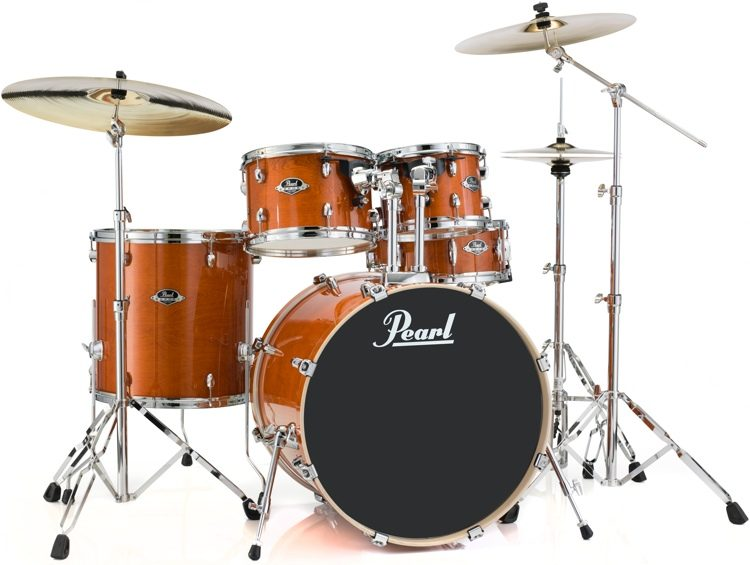

Muhan's Autobiography
 Welcome to the Site!
Welcome to the Site!
Contact me here
My Favorite Books

- No Place to Hide by Glen Greenwald
- Manufacturing Consent by Noam Chomsky
- The Speech by Bernie Sanders
- Just Mercy by Bryan Stevenson
- Animal Farm by George Orwell
- A fighting Chanceby Elizabeth Warren
- We are Anonymousby Penny Olson
- The Giverby Lois Lowry
My Hobbies

- Managing Flat Earth Society Site. Link
- Writing biographies for my website
- Playing Capture The Flag Competitions (CTF)
- Biking
- Playing drum set
- Making Scratch Games
- Playing drums for Chinese New Year
- Practice Hacking
- Play Chess
- Do Tae Kwon Do